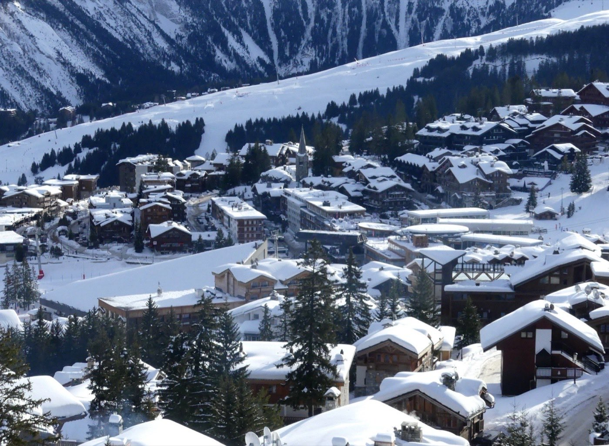
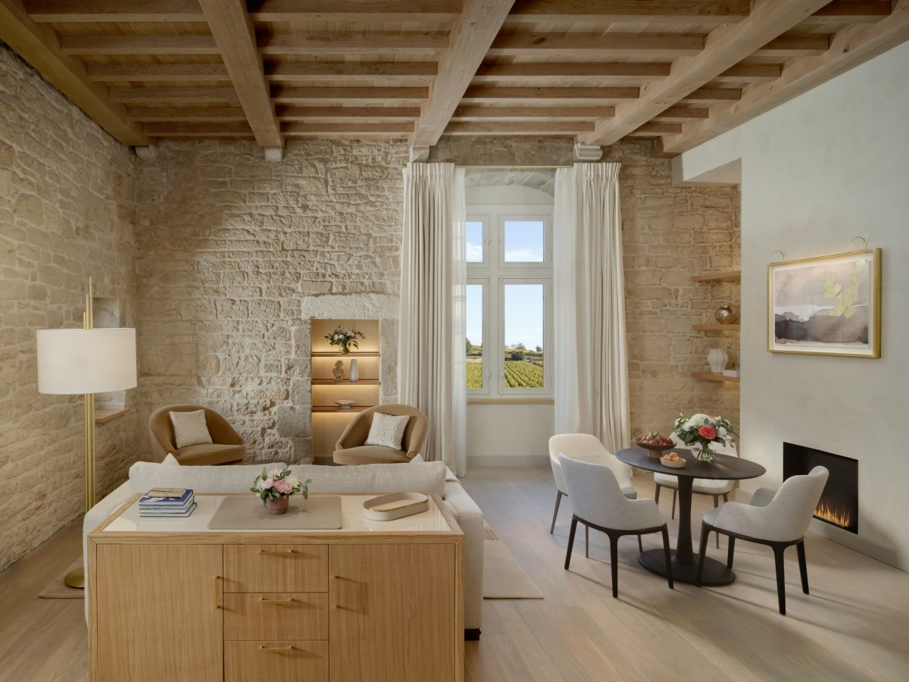
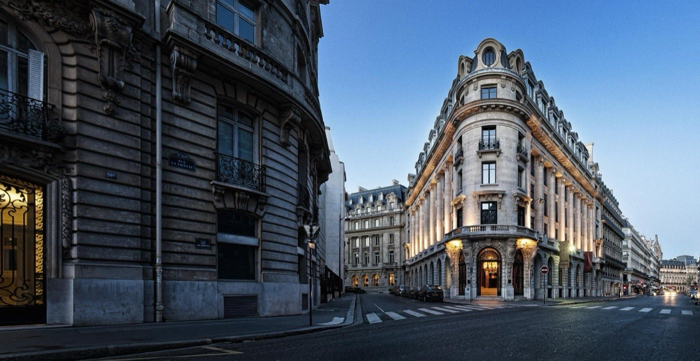
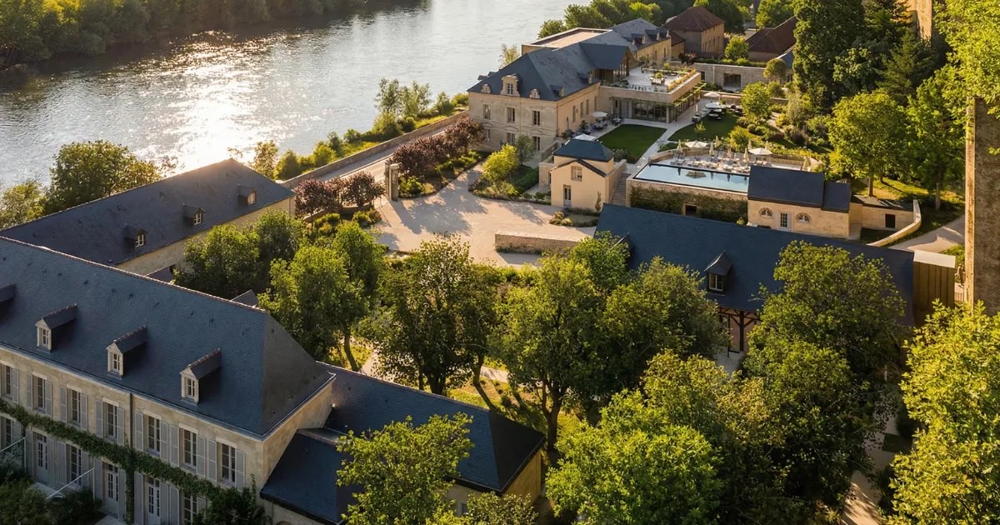
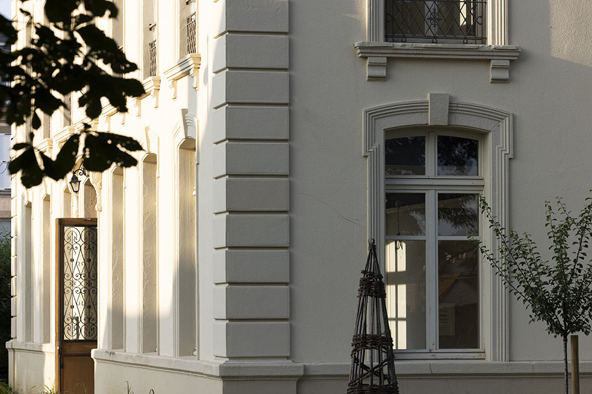
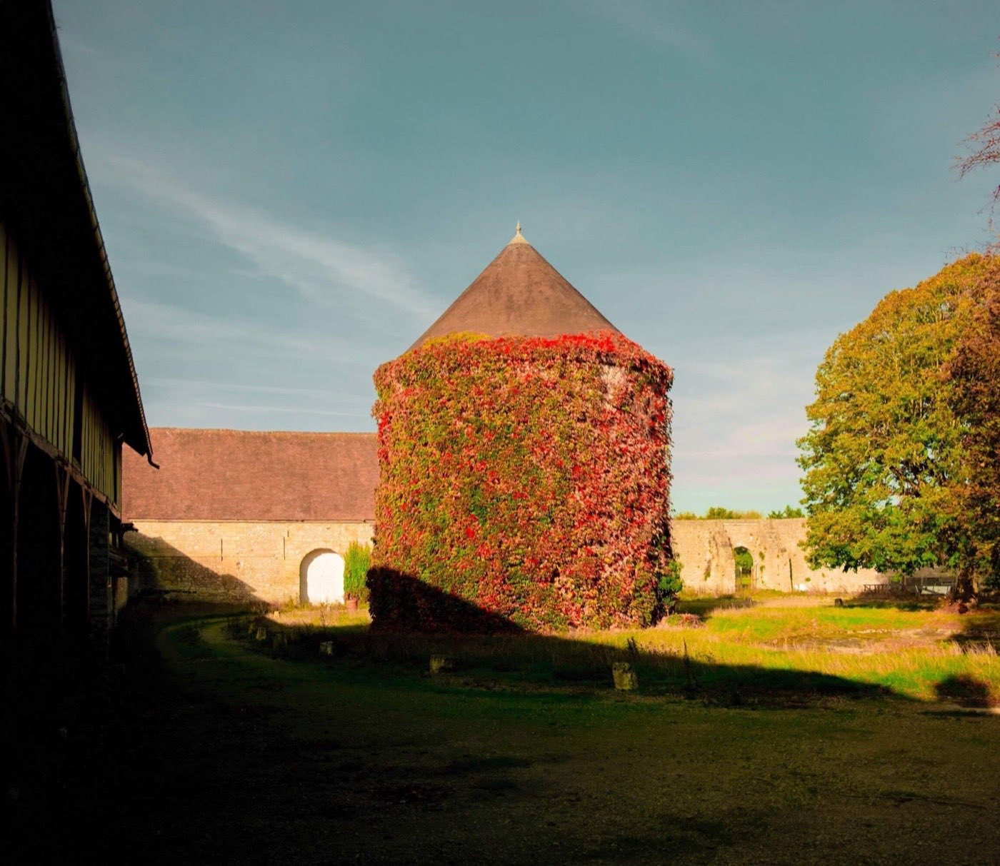
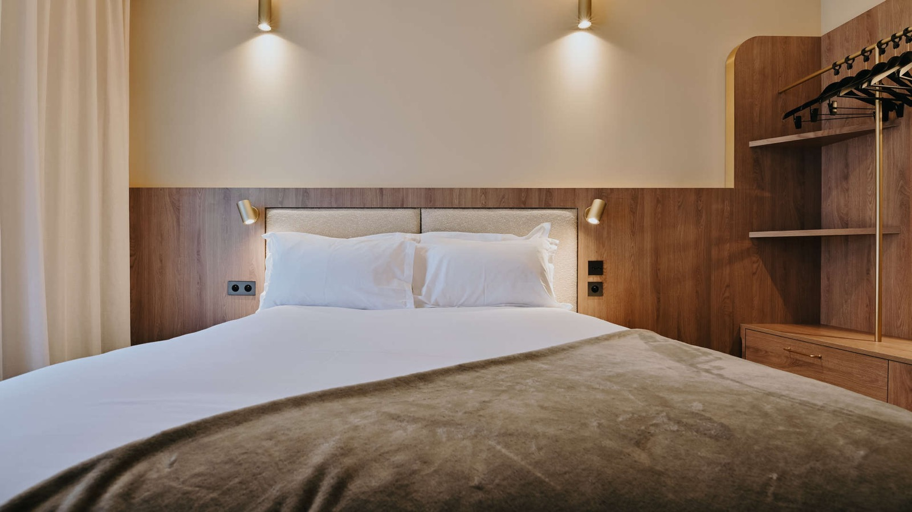

Nouveaux hôtels en France : les 10 ouvertures de l'automne 2026
Châteaux cisterciens en Bourgogne, banque Belle Époque à Paris, refuge couture à Courchevel :
dix adresses redessinent la carte du luxe français cette saison. Six ouvrent entre
septembre et décembre, le Château de Cîteaux ouvre le 24 juillet, deux viennent d'ouvrir
et une, à Langres, est en activité depuis 2024.
Notées avant séjour, en toute transparence.
Par Swann Bertaud, rédacteur✺Publié le 22 juillet 2026✺19 min de lecture
Le Château de Cîteaux, à Meursault : une demeure du XIXe siècle posée sur
des caves cisterciennes du XIIe, que Fontenille Collection rouvre en hôtel le 24 juillet 2026.
Photo : Jean de l'Auxois, CC BY-SA 4.0.
TL;DR : l'essentielLes trois ouvertures à retenir
Hôtel Saint-Roch, Courchevel 1850, 9,4/10 :
décembre 2026, deuxième adresse de Maisons Pariente dans les 3 Vallées, 37 chambres,
design Friedmann & Versace et spa Tata Harper, ski aux pieds sur la piste de Bellecôte.
Château de Cîteaux, Meursault, 9,2/10 :
ouverture le 24 juillet 2026, première adresse bourguignonne de Fontenille Collection,
un château du XIXe sur des caves cisterciennes du XIIe.
Experimental Saint-Germain, Paris 7e, 8,9/10 :
43 chambres et suites boulevard Saint-Germain, avec une piscine, denrée rare dans
l'arrondissement.
À lire avant de réserver : ces notes sont attribuées
avant ouverture et avant tout séjour. Elles mesurent un potentiel, pas une
prestation. Trois des dix adresses de cette page sont déjà ouvertes, deux
depuis le début de l'année 2026 et le Clos Vauban depuis octobre 2024 ; le Château de
Cîteaux, lui, ouvre le 24 juillet : nous le signalons dans le tableau, adresse par adresse.
Comment nous notons une adresse qui n'a pas encore ouvert
Cet article ne relève pas de la grille LMHS Destination utilisée dans nos palmarès de villes : aucune de ces maisons n'a été testée, et il serait malhonnête de leur attribuer un score de séjour. Nous appliquons donc deux indicateurs distincts, propres aux ouvertures :
Score d'anticipation LMHS sur 10 : évalue le potentiel avant ouverture sur cinq critères pondérés, le concept (25 %), le positionnement marché (20 %), le designer ou l'architecte impliqué (20 %), la localisation (20 %) et le rapport entre la promesse affichée et le prix annoncé (15 %). C'est un pronostic, pas un verdict.
Indice buzz LMHS sur 5 : mesure l'engouement avant ouverture en agrégeant les mentions dans la presse spécialisée française et internationale, les demandes de pré-réservation connues, l'originalité du concept, la rareté de la localisation et le profil du groupe porteur.
Ces deux notes seront remplacées par un score LMHS classique après nos premières nuits sur place. Nous les publions parce qu'un calendrier d'ouvertures sans hiérarchie n'aide personne à décider, mais le lecteur doit savoir ce qu'il lit : un pari argumenté, pas un test.
Une précision sur le périmètre. Le titre de cette page parle d'automne, et six adresses ouvrent effectivement entre septembre et décembre 2026. Le Château de Cîteaux ouvre le 24 juillet, deux jours après cette publication. Le Château La Commaraine et le Relais d'Amboise ont ouvert plus tôt dans l'année ; le Clos Vauban, lui, est en activité depuis octobre 2024. Nous gardons ces quatre adresses parce que l'automne 2026 sera pour elles une saison charnière, celle des vendanges en Bourgogne et en Touraine, et parce que leurs semaines de rodage seront alors derrière elles. C'est indiqué en clair dans la colonne « Ouverture ».
Le calendrier : dates, scores et prix annoncés
Rang
Adresse
Région
Ouverture
Clés
Score d'anticipation
Indice buzz
Prix annoncé
01
Hôtel Saint-Roch
Courchevel 1850
déc. 2026
37
9,4/10
4,9/5
1 200 à 1 800 €
02
Château de Cîteaux
Meursault
ouvre le 24 juil. 2026
18 puis 35
9,2/10
4,8/5
350 à 450 €
03
Experimental Saint-Germain
Paris 7e
automne 2026
43
8,9/10
4,7/5
500 à 700 €
04
Château La Commaraine
Pommard
févr. 2026 ouvert
37
8,8/10
4,6/5
450 à 650 €
05
Banke Opéra Paris
Paris 9e
T3 2026
90
8,7/10
4,5/5
400 à 500 €
06
Relais d'Amboise
Val de Loire
été 2026 ouvert
63
8,6/10
4,4/5
500 à 800 €
07
Le Clos Vauban
Langres
oct. 2024 ouvert
8
8,5/10
4,3/5
300 à 450 €
08
La Maregagne
Vexin
fin 2026
88
8,3/10
4,0/5
200 à 300 €
09
Pointe des Arts
Boulogne-Billancourt
nov. 2026
230
8,1/10
4,2/5
250 à 350 €
10
Hôtel Keystone & Spa
Lyon Confluence
sept. 2026
n.c.
7,8/10
3,5/5
150 à 220 €
Classement par score d'anticipation. La mention « ouvert » signale les adresses
déjà en activité au 22 juillet 2026. Prix annoncés par les établissements ou estimés à partir de
leur positionnement, en euros par nuit ; ils n'engagent pas les maisons et seront actualisés
après ouverture. Le Château de Cîteaux ouvre avec 18 chambres et atteindra 35 clés en
janvier 2027, à l'ouverture des dépendances du Vieux-Clos.
Les dix ouvertures, une par une
01

Hôtel Saint-Roch, Courchevel 1850 9,4/10
Ouverture : décembre 2026. Groupe : Maisons Pariente. 37 chambres et suites.
Maisons Pariente signe ici sa deuxième adresse dans les 3 Vallées, et sans doute la plus attendue depuis La Réserve Ramatuelle. Le Saint-Roch, institution de Courchevel 1850 posée sur la piste de Bellecôte, est entièrement repensé par Friedmann & Versace, duo capable de créer des intérieurs alpins qui ne ressemblent à rien d'autre : palette inspirée de la lumière d'hiver, matières profondes, silhouettes sculpturales, détails façonnés à la main. Le spa Tata Harper avec piscine, la salle de sport, le kids club, le restaurant et le ski shop composent une offre ski aux pieds complète. Trente-sept clés seulement, ce qui est exactement la taille permettant un service à la hauteur de la promesse.
Le bémol LMHS : décembre 2026, c'est la première saison. Les hôtels alpins mettent souvent un hiver entier à trouver leur rythme, et les premiers clients paieront le plein tarif d'une adresse encore en rodage. À 1 200 € la nuit en entrée de gamme sur la haute saison, l'exigence sera immédiate.
Piste de Bellecôte, Courchevel 1850, Savoie · Décembre 2026 · 37 chambres et suites ·
Design Friedmann & Versace · Spa Tata Harper · Prix annoncés 1 200 à 1 800 €/nuit en haute saison ·
Indice buzz 4,9/5 ·
Site officiel →
02
Château de Cîteaux, Meursault 9,2/10
Ouverture : 24 juillet 2026. Groupe : Fontenille Collection. 18 chambres, 35 en janvier 2027.
C'est l'ouverture dont toute la Bourgogne hôtelière parle depuis un an. Fontenille Collection, qui a déjà façonné des maisons d'exception à Lourmarin et à Hossegor, s'installe pour la première fois en Bourgogne dans un château du XIXe siècle bâti au-dessus de caves cisterciennes du XIIe, à Meursault, l'un des villages les plus convoités de la Côte de Beaune. L'atmosphère est contemplative : vignes courant jusqu'aux façades, pierres centenaires, spa Alaena de 190 m², restaurant gastronomique dirigé par le chef Christophe Vauthier et ancré dans le terroir local. Les expériences œnologiques autour des grands blancs de la Côte de Beaune constituent l'ADN de la maison.
Le bémol LMHS : la maison ouvre avec 18 chambres seulement. Les dépendances du Vieux-Clos, qui porteront le domaine à 35 clés, ne seront livrées qu'en janvier 2027. Les clients de cet automne découvriront donc un ensemble encore incomplet, avec un chantier voisin, à un tarif qui, lui, est déjà celui de la maison finie.
18 rue de Cîteaux, 21190 Meursault, Côte-d'Or · Ouvre le 24 juillet 2026 · 18 chambres, 35 en janvier 2027 ·
Spa Alaena 190 m² · Caves cisterciennes du XIIe · Prix annoncés 350 à 450 €/nuit ·
Indice buzz 4,8/5 ·
Site officiel →
03
Experimental Saint-Germain, Paris 7e8,9/10
Ouverture : automne 2026. Groupe : Experimental Hotels. 43 chambres et suites.
Experimental Hotels a bâti sa réputation sur des adresses qui savent exactement ce qu'elles sont : des boutique-hôtels avec une âme, un bar signature et une clientèle qui sait pourquoi elle vient. Le groupe a déjà démontré son savoir-faire parisien à l'Hôtel des Grands Boulevards. L'implantation au 192 boulevard Saint-Germain est un pari audacieux dans un arrondissement qui manquait d'une adresse lifestyle de ce niveau, et la piscine annoncée est une rareté dans le 7e, où les hôtels dotés d'un bassin se comptent sur les doigts d'une main. Restaurant gastronomique et bar signature complètent une offre cohérente avec l'ADN de la maison.
Le bémol LMHS : la date reste floue. « Automne 2026 » n'est pas une date, et le groupe a déjà pris du retard sur des projets précédents. Quarante-trois clés dans un quartier aussi couru, cela se remplit vite, mais cela se réserve encore plus vite : les premiers week-ends seront introuvables.
192 boulevard Saint-Germain, Paris 7e · Automne 2026 · 43 chambres et suites ·
Piscine · Restaurant gastronomique et bar signature · Prix estimés 500 à 700 €/nuit ·
Indice buzz 4,7/5 ·
Site du groupe →
04

Château La Commaraine, Pommard 8,8/10
Ouverture : février 2026, déjà en activité. Groupe : Champagne Hospitality. 37 chambres et suites.
Le groupe qui a créé le Royal Champagne Hotel & Spa, l'une des adresses les plus désirables de Champagne, s'attaque à la Bourgogne avec la même ambition. La Commaraine est le premier 5 étoiles installé dans les vignes de Pommard premier cru, sur un clos monopole de quatre hectares. Deux restaurants supervisés par le Meilleur Ouvrier de France Christophe Raoux, un spa, une piscine : l'offre est complète. L'automne, avec les vendanges et les couleurs de la Côte-d'Or, est la meilleure saison pour y venir, et l'établissement aura alors plusieurs mois de rodage derrière lui.
Le bémol LMHS : la Bourgogne viticole devient un marché saturé en 2026. Le Château de Cîteaux à Meursault, à moins de dix minutes de route, et Les Sources de Vougeot à Gilly-lès-Cîteaux ouvrent la même année et sur le même segment. La différenciation par le clos monopole devra être tenue dans l'assiette et dans le verre, pas seulement dans le discours.
Pommard, Côte-d'Or · Ouvert depuis février 2026 · 37 chambres et suites ·
Clos monopole de 4 hectares en Pommard premier cru · Deux restaurants supervisés par Christophe Raoux ·
Prix annoncés 450 à 650 €/nuit · Indice buzz 4,6/5 ·
Site officiel →
05

Banke Opéra Paris, Radisson Collection 8,7/10
Ouverture : troisième trimestre 2026. Groupe : Radisson Collection. 90 chambres.
Un immeuble de 1907, ancien siège bancaire converti une première fois en hôtel en 2009, qui passe cette année sous pavillon Radisson Collection au terme d'une rénovation complète. Ce qui distingue le projet des autres ouvertures parisiennes tient au récit patrimonial : un escalier monumental attribué à Gustave Eiffel, conservé dans un atrium du XIXe siècle qui accueillera la réception, le bar et le restaurant, et un espace bien-être aménagé dans l'ancienne salle des coffres. Opéra Garnier à deux pas, Galeries Lafayette à cent mètres.
Le bémol LMHS : Radisson Collection reste une marque en construction de réputation en France, et le positionnement premium devra se tenir dans les détails du service, pas seulement dans l'architecture. Le quartier de l'Opéra est très touristique, ce qui pèse sur l'atmosphère. Enfin, il s'agit d'une reprise d'hôtel existant plutôt que d'une création : la rénovation devra faire oublier l'adresse précédente.
20 rue La Fayette, Paris 9e · Troisième trimestre 2026 · 90 chambres ·
Escalier attribué à Gustave Eiffel · Bien-être dans l'ancienne salle des coffres ·
Prix estimés 400 à 500 €/nuit · Indice buzz 4,5/5 ·
Site de la marque →
06

Relais d'Amboise, Val de Loire 8,6/10
Ouverture : été 2026, déjà en activité. Groupe : Marugal. 63 chambres.
Frédéric Jousset, qui a déjà transformé le Relais de Chambord en référence de l'hôtellerie ligérienne, réunit deux adresses historiques d'Amboise, Le Choiseul et Les Minimes, pour créer le premier 5 étoiles de ce niveau dans la ville. Le spa niché dans des grottes troglodytes naturelles est l'argument le plus fort : aucune autre adresse française ne propose l'équivalent. Le rooftop avec vue sur la Loire et le château royal complète une proposition qui s'annonce comme le nouveau fleuron de la Touraine. L'automne, saison des vendanges de Vouvray et des lumières basses sur le fleuve, est le bon moment.
Le bémol LMHS : soixante-trois clés réparties dans deux bâtiments distincts, cela exige une cohérence opérationnelle difficile à tenir dès la première année. Et la saison touristique ligérienne ralentit nettement après octobre, ce qui pèsera sur l'animation de la maison en fin d'automne.
Amboise, Indre-et-Loire · Ouvert depuis l'été 2026 · 63 chambres ·
Spa en grottes troglodytes · Rooftop vue Loire et château royal ·
Prix annoncés 500 à 800 €/nuit · Indice buzz 4,4/5 ·
Site du groupe →
07

Le Clos Vauban, Langres 8,5/10
Ouverture : octobre 2024, déjà en activité. Label : Relais & Châteaux. 8 chambres et suites.
Huit chambres, deux tables, une demeure de 1866 sur les remparts de Langres, ville médiévale classée et trop peu connue. Le Clos Vauban est porté par Laurent Petit et son épouse Martine, venus du Clos des Sens à Annecy, maison qu'ils ont hissée jusqu'à trois étoiles Michelin avant de la céder. Ils rejouent ici la même partition avec le chef Valentin Loison et la sommelière Anaïs Bercegeay. Deux restaurants : Bulle d'osier, gastronomique, sur une cuisine de jardin et de forêt, menus à 140 et 180 €, et Mirabelle, la table accessible, à 39 €. L'hôtel est classé 5 étoiles et labellisé Relais & Châteaux. C'est l'archétype de l'adresse confidentielle dont on parlera bien au-delà de sa taille.
Le bémol LMHS : contrairement à ce que l'on lit parfois, Bulle d'osier n'a pas encore d'étoile Michelin. Les deux tables sont citées au guide, rien de plus à ce jour, et Laurent Petit déclare lui-même ne pas courir après les macarons. Par ailleurs, la localisation reste très à l'écart, à 3 h 30 de Paris, ce qui suppose une clientèle qui se déplace exprès. Un modèle à huit chambres reste fragile si la table ne tourne pas à plein.
1 place du Colonel de Grouchy, 52200 Langres, Haute-Marne · Ouvert depuis octobre 2024 · 8 chambres et suites ·
Relais & Châteaux · Bulle d'osier (menus 140 et 180 €) et Mirabelle (39 €) ·
Prix estimés 300 à 450 €/nuit · Indice buzz 4,3/5 ·
Site officiel →
08

La Maregagne, Vexin 8,3/10
Ouverture : fin 2026. Porteur : Édouard Daehn. 88 chambres.
Édouard Daehn avait déjà inventé le Barn, l'hôtel de campagne chic à moins de deux heures de Paris qui a redéfini le week-end rural pour une clientèle parisienne exigeante. La Maregagne va plus loin : 110 hectares de prairies, de forêts et de pâtures, une ferme en activité réelle avec élevage et maraîchage, un restaurant locavore ouvert à tous, et 88 chambres pensées pour des séjours immersifs. Le design est confié aux Ateliers Saint-Lazare. C'est l'antithèse du resort déconnecté de son territoire, et le Vexin, à moins d'une heure trente de Paris, s'y prête idéalement.
Le bémol LMHS : « fin 2026 » reste vague, et 88 chambres dans un projet aussi complexe, mêlant construction neuve et exploitation agricole en activité, représentent un défi opérationnel considérable. Le risque de report en 2027 est réel, et c'est l'ouverture de cette liste sur laquelle nous serions le moins surpris de voir la date glisser.
Amenucourt, Vexin, Val-d'Oise · Fin 2026 · 88 chambres · 110 hectares avec ferme en activité ·
Restaurant locavore ouvert à tous · Design Ateliers Saint-Lazare ·
Prix estimés 200 à 300 €/nuit · Indice buzz 4,0/5
09
Pointe des Arts, Boulogne-Billancourt 8,1/10
Ouverture : novembre 2026. Groupe : Marugal. 230 chambres.
L'Île Seguin, ancienne friche industrielle Renault, se mue en destination culturelle et hôtelière du Grand Paris. Le projet réunit un centre d'art contemporain de 5 000 m², un cinéma de huit salles et cet hôtel signé Maison Sarah Lavoine, dont la signature intérieure garantit une cohérence esthétique immédiatement reconnaissable. Restaurant panoramique, spa de 400 m², rooftop de 100 m², piscine intérieure avec vue sur la Seine : c'est le resort urbain que le Grand Paris attendait, sur l'eau, à quelques minutes de Paris en transports.
Le bémol LMHS : 230 chambres, c'est beaucoup, et le risque de diluer l'expérience dans un tel volume est réel, surtout pour une maison de décoration habituée à des formats plus intimes. Boulogne-Billancourt reste par ailleurs une destination secondaire pour la clientèle internationale, même si le projet culturel qui l'entoure devrait changer la donne progressivement.
Île Seguin, 696 rue Yves Kermen, 92100 Boulogne-Billancourt · Novembre 2026 · 230 chambres ·
Décoration Maison Sarah Lavoine · Spa 400 m², rooftop, piscine vue Seine ·
Prix estimés 250 à 350 €/nuit · Indice buzz 4,2/5
10

Hôtel Keystone & Spa, Lyon Confluence 7,8/10
Ouverture : septembre 2026. Groupe : Handwritten Collection, Accor. 4 étoiles.
Handwritten Collection annonce plusieurs ouvertures françaises en 2026, et le Keystone de Lyon est l'une des plus attendues de la rentrée. Le positionnement bien-être dans le quartier Confluence, l'un des projets urbains les plus ambitieux de France depuis dix ans, est pertinent : la clientèle d'affaires qui fréquente le quartier et les Lyonnais eux-mêmes constituent une cible naturelle. L'offre spa hôtelière reste peu développée à Lyon, comme le montre notre palmarès des meilleurs hôtels lyonnais, où aucune adresse ne se distingue vraiment sur ce terrain.
Le bémol LMHS : Handwritten Collection est une marque jeune, dont la promesse de sélection doit encore se vérifier adresse par adresse. Confluence attire les entreprises mais n'a pas encore la densité de vie du soir qui rend un quartier vraiment désirable pour un séjour d'agrément. C'est le score d'anticipation le plus bas de cette liste, et le seul indice buzz sous 4.
Lyon Confluence, Rhône · Septembre 2026 · 4 étoiles, hôtel bien-être ·
Handwritten Collection (Accor) · Prix estimés 150 à 220 €/nuit ·
Indice buzz 3,5/5
Le mot de SwannCelle que j'attends vraiment
Si je ne devais en surveiller qu'une, ce serait l'Hôtel Saint-Roch. Pas parce que c'est la plus médiatisée, mais parce que Maisons Pariente n'a jamais raté une ouverture : Friedmann & Versace au design, Tata Harper au spa, la piste de Bellecôte au pied des skis, c'est le type de projet qui tient ses promesses une fois les portes ouvertes. Ma deuxième recommandation est moins évidente : le Clos Vauban, à Langres. Huit chambres, un couple qui a déjà mené une maison jusqu'à trois étoiles avant de tout recommencer ailleurs, et une ville médiévale que presque personne ne connaît. C'est exactement le genre d'adresse qui, dans cinq ans, sera impossible à réserver. Et un avertissement : une ouverture n'est pas un test. Les scores de cette page sont des paris. Nous reviendrons dormir, et certains seront revus à la baisse.
Swann Bertaud, rédacteur hôtellerie de luxe
Par région : où se concentrent les ouvertures
Paris et Île-de-France
Quatre des dix adresses sont franciliennes. Le Banke Opéra Paris (9e, troisième trimestre) et l'Experimental Saint-Germain (7e, automne) sont les deux ouvertures les plus attendues dans la capitale, sur des registres opposés : le premier joue le patrimoine bancaire Belle Époque, le second le boutique-hôtel à forte identité. À Boulogne-Billancourt, la Pointe des Arts sur l'Île Seguin (novembre) est le projet hôtelier le plus ambitieux du Grand Paris depuis des années. Et La Maregagne dans le Vexin (fin 2026) complète cette offre par le versant rural.
Montagne
Une seule adresse, mais c'est la première du classement. L'Hôtel Saint-Roch à Courchevel 1850, en décembre, s'annonce comme l'adresse de référence des 3 Vallées pour la saison 2026-2027. Trente-sept clés, un accès ski aux pieds sur la Bellecôte, un spa Tata Harper : les amateurs de ski de luxe ont intérêt à réserver maintenant, cela partira vite.
Bourgogne et Val de Loire
La Bourgogne est la région la plus dynamique de l'année. Le Château de Cîteaux à Meursault (Fontenille, juillet) et le Château La Commaraine à Pommard (Champagne Hospitality, février) ouvrent la même année, à moins de dix minutes de route l'un de l'autre, rejoints par Les Sources de Vougeot à Gilly-lès-Cîteaux. Trois 5 étoiles viticoles sur une même côte en douze mois, c'est un pari collectif sur la clientèle œnotouristique qu'il faudra observer de près. En Touraine, le Relais d'Amboise et son spa troglodyte jouent une carte que personne d'autre ne détient. Et à Langres, le Clos Vauban est la découverte discrète de cette liste.
FAQ : les nouveaux hôtels français de l'automne 2026
Quels nouveaux hôtels de luxe ouvrent en France à l'automne 2026 ?
Six adresses de notre sélection ouvrent entre septembre et décembre 2026 : le Banke Opéra Paris (Radisson Collection, Paris 9e, troisième trimestre), l'Hôtel Keystone & Spa (Lyon Confluence, septembre), l'Experimental Saint-Germain (Paris 7e, automne), la Pointe des Arts (Boulogne-Billancourt, novembre), La Maregagne (Vexin, fin 2026) et l'Hôtel Saint-Roch (Courchevel 1850, décembre). Le Château de Cîteaux ouvre le 24 juillet 2026 ; le Château La Commaraine et le Relais d'Amboise ont ouvert plus tôt en 2026, et le Clos Vauban est en activité depuis octobre 2024.
Qu'est-ce que le Score d'anticipation LMHS ?
C'est une note sur 10 attribuée avant ouverture et avant tout séjour. Elle évalue le potentiel d'une adresse sur cinq critères pondérés : le concept (25 %), le positionnement marché (20 %), le designer ou l'architecte impliqué (20 %), la localisation (20 %) et le rapport entre la promesse affichée et le prix annoncé (15 %). Ce n'est pas un score de séjour : il sera remplacé par une note LMHS classique après nos premières nuits sur place.
Quels nouveaux hôtels ouvrent à Paris à l'automne 2026 ?
Deux ouvertures majeures. Le Banke Opéra Paris (Radisson Collection, 90 chambres, 20 rue La Fayette, Paris 9e), dans un immeuble de 1907 avec un escalier attribué à Gustave Eiffel et un espace bien-être aménagé dans l'ancienne salle des coffres. Et l'Experimental Saint-Germain (43 chambres et suites, 192 boulevard Saint-Germain, Paris 7e), doté d'une piscine, rareté dans cet arrondissement. À quoi s'ajoute la Pointe des Arts à Boulogne-Billancourt en novembre.
Quel est le meilleur nouvel hôtel de montagne pour l'hiver 2026 ?
L'Hôtel Saint-Roch à Courchevel 1850, qui ouvre en décembre 2026 sous l'égide de Maisons Pariente, avec le meilleur score d'anticipation de notre sélection (9,4/10). Deuxième adresse du groupe dans les 3 Vallées, repensée par Friedmann & Versace, elle proposera 37 chambres et suites, un accès ski aux pieds sur la piste de Bellecôte et un spa signé Tata Harper.
Quelle région française concentre le plus d'ouvertures de luxe en 2026 ?
La Bourgogne, avec trois ouvertures viticoles majeures sur douze mois : le Château de Cîteaux à Meursault (Fontenille Collection), le Château La Commaraine à Pommard (Champagne Hospitality) et Les Sources de Vougeot à Gilly-lès-Cîteaux. L'Île-de-France suit de près avec quatre adresses, dont deux dans Paris intra-muros.
Méthode et sources
10 ouvertures retenues sur le calendrier hôtelier français 2026. Deux indicateurs propriétaires, attribués avant séjour : le Score d'anticipation LMHS sur 10 (concept 25 %, positionnement 20 %, designer ou architecte 20 %, localisation 20 %, rapport promesse-prix 15 %) et l'Indice buzz LMHS sur 5. Aucun de ces établissements n'a été testé par la rédaction : ces notes sont des pronostics et seront remplacées par un score LMHS classique après nos premières nuits. Aucun partenariat commercial, aucune affiliation. Dates, capacités et équipements vérifiés en juillet 2026 auprès des sites officiels et de la presse professionnelle : ouverture du Château de Cîteaux le 24 juillet 2026 avec 18 chambres puis 35 en janvier 2027, spa Alaena de 190 m², chef Christophe Vauthier ; Hôtel Saint-Roch en décembre 2026, 37 clés, design Friedmann & Versace, spa Tata Harper, deuxième adresse de Maisons Pariente dans les 3 Vallées ; Banke Opéra Paris au troisième trimestre 2026, 90 chambres, escalier attribué à Eiffel, immeuble de 1907 déjà converti en hôtel en 2009 ; Clos Vauban ouvert depuis octobre 2024, 8 chambres, deux restaurants sans étoile Michelin à ce jour ; Château La Commaraine ouvert en février 2026, 37 chambres et suites confirmées par le site officiel. Prix indiqués tels qu'annoncés par les établissements ou estimés à partir de leur positionnement. Photographies : Wikimedia Commons, Château de Cîteaux par Jean de l'Auxois (CC BY-SA 4.0), Courchevel 1850 par Florian Pépellin (CC BY-SA 4.0).
10 ouvertures suiviesNotes avant séjour, assuméesScore d'anticipation propriétaire0 partenariat